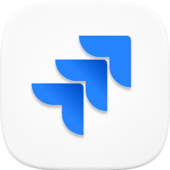
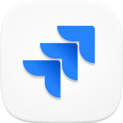

Icelandia
A redesign for Reykjavik's Hop-on Hop-off bus service, enhancing how tourists explore Iceland's capital.
 

The existing tourist bus interface faced two critical issues. First, poor visual hierarchy where all elements – buses, stops, and routes – shared the same red color, making navigation difficult. Second, a problematic time display system where waiting times were based on fixed schedule points rather than actual bus location. For example, if a bus was scheduled for 14:15, the system would show "9 minutes" at 14:06, regardless of the bus's actual position. This rigid schedule-based approach, rather than real-time tracking, led to significant user frustration and confusion.
The starting point for redesign
The initial phase involved analyzing the existing color system and user pain points. User feedback identified that the monochromatic red scheme was causing significant confusion, particularly when users tried to distinguish between buses and stops on the map.
The new design system focused on clear visual hierarchy and component reusability. Key elements included:
- Map Component States: The map interface was developed with various zoom states, ensuring information remained clear and useful at each level. This involved careful consideration of how different elements (buses, stops, routes) would scale and interact.
- Icon Redesign The bus and bus stop icons were completely reimagined to create clear visual distinction. Each icon was designed to work across different sizes while maintaining visibility and purpose.
- Stop List Variations:The mobile interface implements horizontal swipeable cards, following established design conventions for public transport applications. This pattern leverages natural thumb gestures and allows efficient browsing of stops. The desktop version utilizes a vertical list view, better suited for larger screens and mouse-based interaction. Both formats maintain consistent information hierarchy while optimizing for their respective platforms.
A glimpse of the design system
A major improvement was the shift from fixed schedule times to actual real-time tracking. Instead of showing countdown to pre-scheduled arrival times (without including delays). The new interface displays the bus's current location related to the chosen stop. This change directly addressed user feedback about the misleading nature of the previous system. The implementation required careful consideration of how to display dynamic timing information clearly while handling real-world variables like traffic delays and service changes. As a result of this, we also had to include semantic components so delays and/or bigger events can be annonced.
The redesign delivered several key improvements:
- Clear visual differentiation between service elements
- Accurate, real-time arrival information
- Consistent experience across devices
- Scalable design system for future development
The result of the redesign process
The result of the redesign process
The design system was built using Figma, with components designed for both mobile and desktop implementations. Comprehensive documentation was created for the development team, including component specifications and interaction states.
The redesign demonstrated that focused design decisions can transform user experience. By separating visual elements through color and implementing real-time tracking, the service became more trustworthy and easier to navigate. These fundamental improvements addressed the core user needs: quick understanding of bus locations and reliable arrival times.